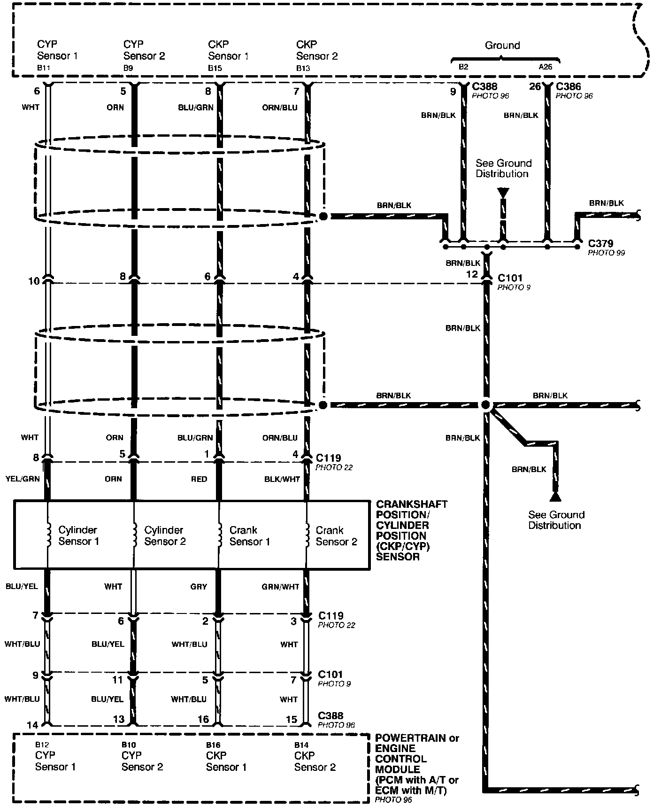
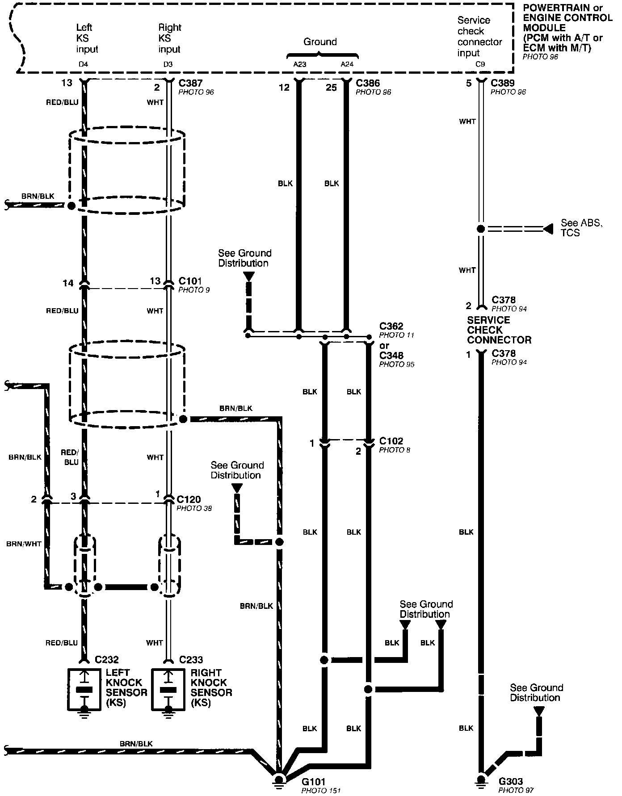

Grounds and Engine and Vehicle Data Sensors
Programmed Fuel Injection System (PGM-FI)- Grounds And Engine And Vehicle Data Sensors (part 1 of 2):

Programmed Fuel Injection System (PGM-FI)- Grounds And Engine And Vehicle Data Sensors (part 2 of 2):
